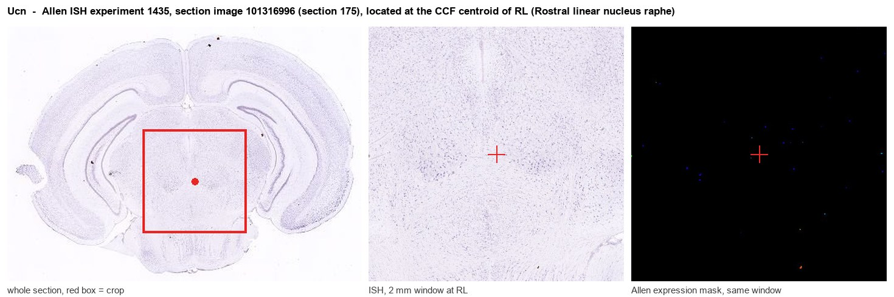
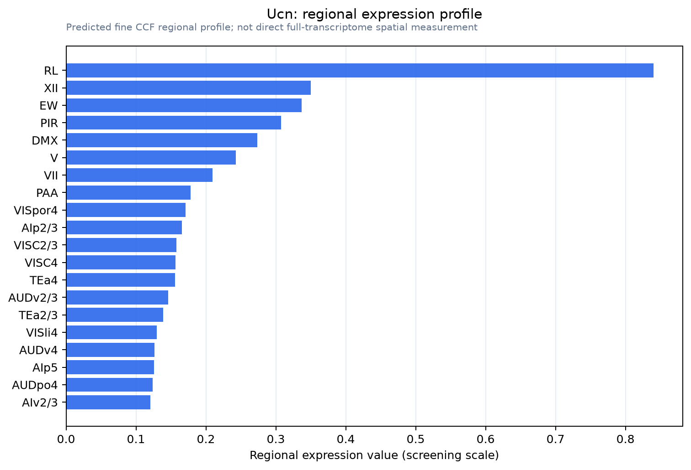

Ucn
Spatial tier: STRICT_EXCLUSIVE · Class: OTHER · Top region: RL (Rostral linear nucleus raphe) · Positive regions: 7/554
50.6Discovery Score
39.6Targetability Score
CEvidence grade C
What this means: Ucn: predicted fine-region profile is strict-exclusive, with 7 positive regions out of 554 (limit 12); direct spatial validation is required.
Function in RL: evidence, prediction, innovation
- Gene function
- Ucn encodes urocortin-1, a 40-amino-acid corticotropin-releasing-factor-family neuropeptide. It activates CRF1 and, with far higher affinity than CRF, CRF2, via Gs/cAMP. Urocortin-1 mediates stress coping, anxiety, satiety and alcohol-related behaviours, plus peripheral cardiovascular actions.
- Region function
- The rostral linear nucleus is a midline midbrain raphe-complex nucleus of intermixed dopaminergic (A10 extension), serotonergic and GABAergic neurons serving reward, opiate reinforcement and motivation.
- Published in this region
- expression only Rodent brain's densest urocortin-1 group, the centrally projecting Edinger-Westphal nucleus (EWcp/pIIIu) in ventromedial periaqueductal grey, partly overlaps the CCF territory annotated RL, so the RL signal likely reports it. EWcp Ucn1 is required for ethanol preference (Giardino et al. 2011), responds to leptin (Xu et al. 2011) and projects to lateral septum (Bachtell et al. 2003); caudal dorsal raphe Ucn1 alters food and fluid intake (Weitemier et al. 2006).
- Predicted function
- Prediction: Ucn cells at the RL/EWcp border form a CRF2-biased stress-and-satiety node releasing urocortin-1 onto dorsal raphe, lateral septum and VTA. Chemogenetic activation should suppress feeding and ethanol intake; Ucn deletion or local astressin2-B should blunt binge drinking and stress-induced hypophagia.
- Innovation
- ★★☆☆☆ 2/5 Urocortin-1 is heavily studied but always as EWcp, so novelty lies in re-registering it to RL and testing dopaminergic neighbours.
- Tools
- Ucn knockout mice; Ucn1 antisera; CRF2 antagonist astressin2-B, CRF1 antagonist antalarmin; Cart-Cre for EWcp, where AAV targeting is established; Th-Cre, Dat-Cre, Slc6a4-Cre label neighbouring RL cells.
- References
Direct evidence located at the region

Allen ISH experiment 1435, section image 101316996 (section 175): the section that contains the CCF centroid of Rostral linear nucleus raphe according to the Allen image-to-atlas alignment (reference_to_image), with a 2 mm window around that point. Left: whole section, red box = window. Middle: ISH signal. Right: Allen's expression-mask view of the same window. open this image in the Allen viewer
Look it up yourself: Allen Mouse Brain ISH for UcnAllen reference atlas: RL (structure 197)ABC Atlas MERFISH viewer(in the ABC Atlas choose dataset MERFISH-C57BL6J-638850-CCF, colour cells by gene "Ucn" or by parcellation_substructure "RL")All genes confined to RL + 3-D brain
Direct spatial evidence
MERFISH REGION LOCATOR

Regional expression figure

Predicted WMB × fine-CCF profile; not direct full-transcriptome spatial measurement.
Spatial profile
Evidence and specificity
- Evidence status
- PREDICTED_FINE
- Direct sources
- None; predicted localization only
- Exclusive threshold
- 12 positive regions out of 554
- Spatial specificity
- 0.357
- Top-region fraction
- 0.116
- Filter status
- PASS
Interpretation limits
- Cell-type-to-region projection is imputed expression, not direct spatial measurement.
- Adult reference atlases do not establish stability across age, sex, strain, state, or disease.
- Transcript abundance does not guarantee protein abundance or genetic-tool performance.